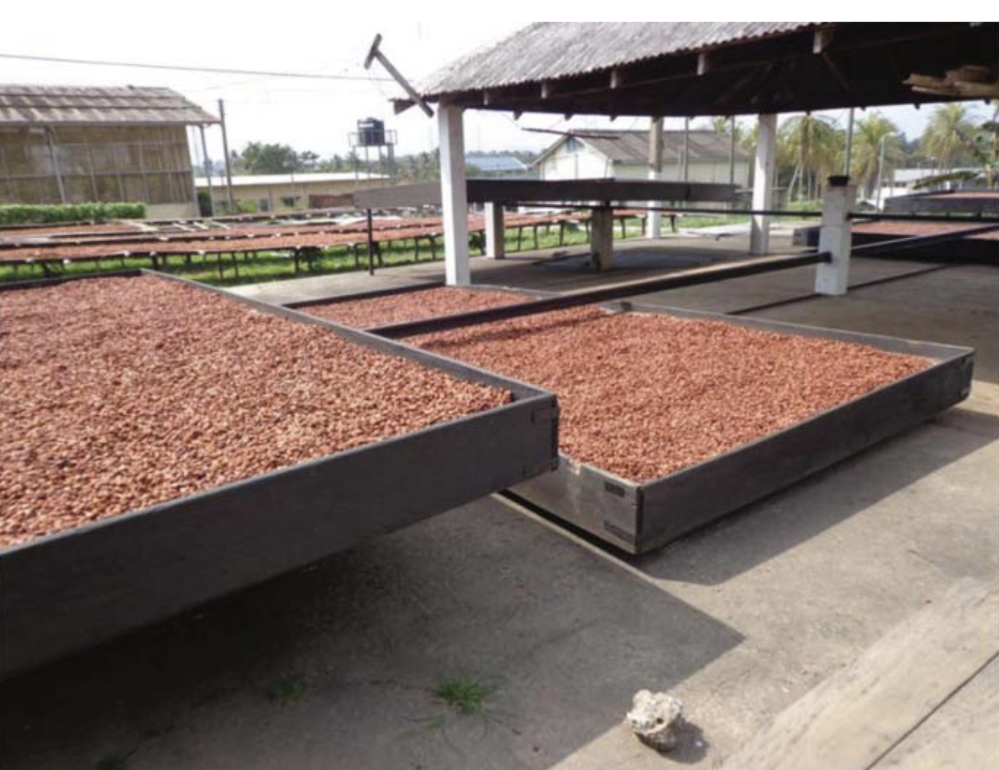

Bean removal from pod
The first stage of the cocao beans production is the removal of the beans from the pods. The forestero and trinitario pods will generally produce 30+ beans per pod, while the Cirollo pods will only produce 20-30 beans. To the left is an image of a Forestero pod with half of its husk peeled off but with the beans casing intact. To the right, is a Forestero pod cut through the middle. Each of the beans are surrounded by a pulp that aids in the process of fermentation.


Drying
The next stage of the process is drying out the beans. Beans are dried from approximately 55% mosture content to 7.5%. If the beans are left above 8%, mold can form and if they have less than 5% they become to brittle. The chemical process that began in the aerobic phase of fermentation continues through the drying process, lowering the bitterness and astringent flavors. The tequniques of drying can be split into two main catigories, sun drying (pictured below) and artificial drying. During artifical drying, the bean case hardens wich reduces the loss of volitile acids and creates a less favorable chocolate. When beans are allowed to sun dry, the chocolate flavor becomes more developed and off note flavors such as smoky and bitter are better reduced.


Roasting and Conching
Once the drying stage is complete, the beans are ready to be packages and moved to production areas and factories. However, before they can be made into chocolate they much be roasted and conched. The process of roasting is applying high heat to the cocao bean. Processing at high tempreatures is what creates the difference between cocoa and cocao. In general cocoa that will be used for milk chocolate will be processed at slightly lower tempratures than cocoa used for dark chocolate. Conching is then a mechanical process that grinds up the cocoa nibs into a paste that can then be used to create chocolate.